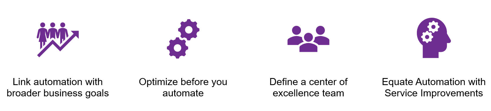

Automation is the ability to use technology to perform tasks with minimal human effort. It describes the tools, techniques, and strategies designed to minimize labor, freeing up human workers from time consuming, repetitive tasks, for improved efficiency.
Automation, is a journey, not a destination. There will always be more to automate as business, technology, and environments change. A structured, skills-based, sustainable, and scalable approach to how you automate will enable you to incrementally build trusted automation into the very fabric of your enterprise.
